Drivetrain - Transfer Case Identification Information
INFORMATIONBulletin No.: 12-04-21-001B
Date: April 11, 2013
Subject: Transfer Case Identification First Design vs. Second Design
Models:
2007-2013 Cadillac Escalade Models
2007-2013 Chevrolet Avalanche, Silverado, Suburban, Tahoe
2007-2013 GMC Sierra, Yukon, Yukon Denali
Equipped with Magna X2T Transfer Case (RPOs NQF, NQG, NQH or NP0)
Supercede:
This bulletin is being revised to add the 2013 model year, clarify the information from the previous bulletin and to add data throughout. The document should be reviewed and treated as new information. Please discard Corporate Bulletin Number 12-04-21-001A (Section 04 - Driveline/Axle).
The purpose of new product information is to document important product changes that occur either model year-to-model year or interim model year.
Changes may include one or more of the following items:
- Specification changes
- New sealants and/or adhesives
- Disassembly and assembly procedure revisions
- Mechanical and diagnostic procedure revisions
- New special tools required
- Interim model year design changes
- A component comparison from the previous model year
Interim Model Year Design Change - NQF/NQG/NQH/NPO Front Output Shaft, Deflector, Seal
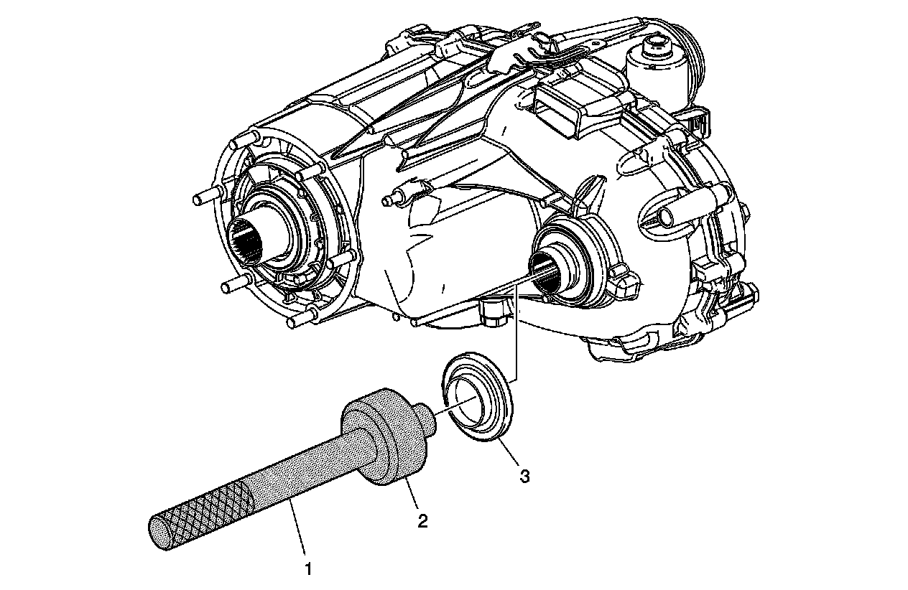
Interim 2012 model year, a new design front output shaft deflector (3) was implemented into production for second design NQF-HD/SHD and NQG-HD applications. First design 2011 model year NQF and NQG applications can be identified as not having the deflector on the front output shaft.
For service, the new design front output shaft, deflector and new design seal may be installed on current and prior model year Magna NQF-HD/SHD, NQG-LD/HD, NQH-LD/HD and NP0 applications providing the new design front output shaft is also installed. The front output shaft deflector is to be installed using the J 8092 - driver handle (1) and DT 50649 - seal installer (2).
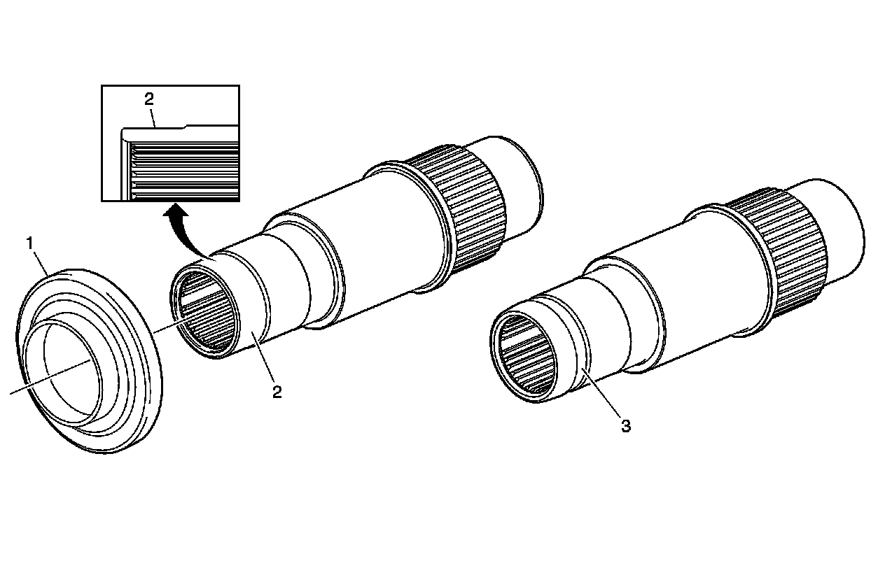
The new design deflector (1) can be installed onto all current and prior model year Magna RPOs NQF, NQG, NQH and NPO applications providing the new design front output shaft (2) is also installed. Second design front output shafts can be identified by the machined area on the OD output end of the shaft (2). First design front output shafts can be identified by the dust boot clamp groove (3) located at the OD output end of the shaft. The new design slinger will NOT install onto the first design shafts.
Service Parts Release Usage Change - NQH/NPO Control Actuator Levers
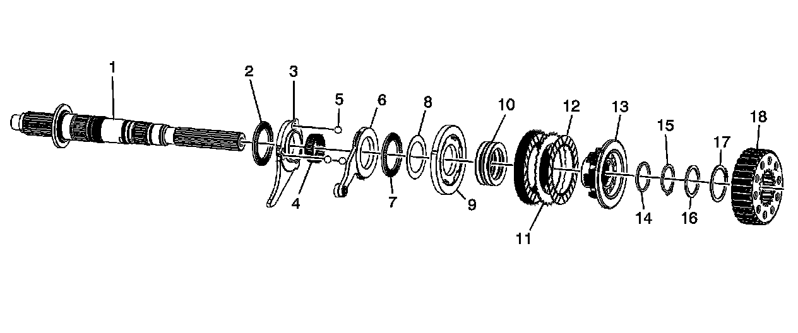
Light Duty (LD) 2007-2010 MP3023-NQH and 2010 MP3010-NP0 production transfer cases are built with LD control actuator levers (3 and 6) and are used with 13 mm (0.52 in) diameter control actuator lever balls (5).
Heavy duty (HD) 2007-2010 MP3024-NQH production transfer cases are built with HD control actuator levers (3 and 6) and are used with Heavy 10 mm (0.39 in) control actuator lever balls.
When replacement of one or both of the LD control actuator levers is required, it is necessary to replace both of the levers and all three balls with the HD components as a set. It is also necessary to re-measure and adjust clutch pack clearances as required and to perform the Transfer Case High/Low Clutch Reset. Refer to Measuring/Adjusting Clutch Assembly Height in Transfer Case Assemble, Transfer Case Description and Operation and Transfer Case High/Low Clutch Reset. Heavy duty (HD) components are the only parts available for service.
Interim Model Year Design Change - NQG High/Low Shift Fork, Fork Pad, and High/Low Clutch
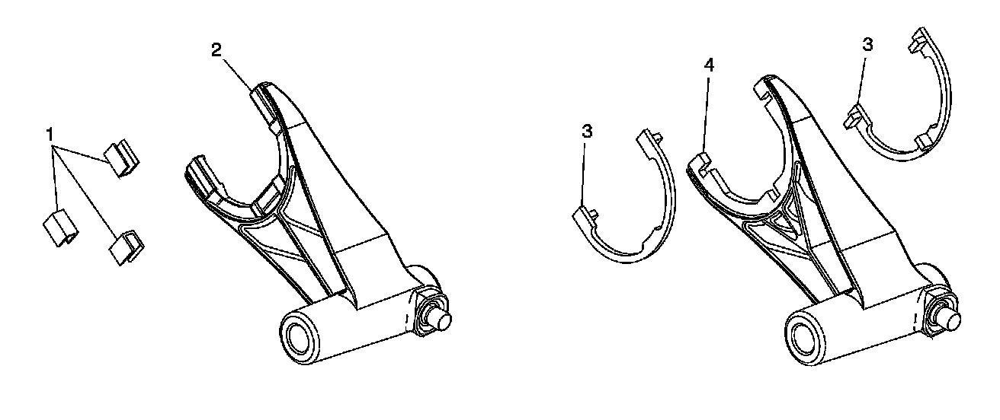
Interim 2012 model year the High/Low shift fork, fork pad and High/Low clutch design changed. The first design forks (2) can be identified as having three flat un-notched fork pad areas with three separate fork pads (1). The second design forks (4) can be identified as having a half-round shaped pad area with three notches for pad orientation and installation and upper and lower half-round fork pads (3). The second design shift fork (4) and pads (3) are the only design available for service and must be used with the second design High/Low clutch.
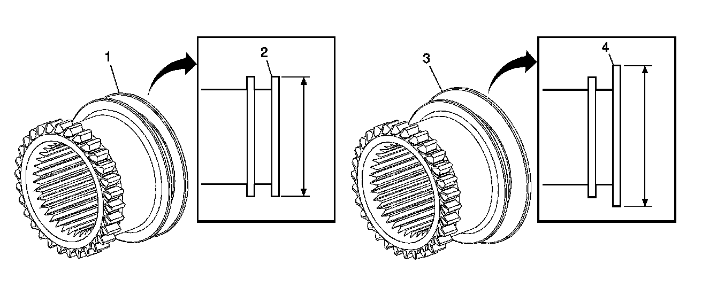
Interim 2012 model year the High/Low shift fork, fork pad and High/Low clutch design changed. The first design high/low clutch (1) can be identified by having a 73 mm (2.87 in) OD rear flange (2). The second design high/low clutch (3) can be identified by having a 76 mm (2.99 in) OD rear flange (4).
For service:
- The first design 73 mm (2.87 in) high/low clutch may NOT be used with the second design fork and pad.
- The second design 76 mm (2.99 in) high/low clutch must be used with the second design fork and fork pad.
- The second design 76 mm (2.99 in) high/low clutch may also be used with the first design fork and pad if first design fork replacement is not required.
Interim Model Year Design Change - NQF/NQG/NQH Front Case Half Assembly, Input Shaft, Planetary Carrier High/Low Clutch
Interim 2012 model year for Magna light-duty and heavy-duty transfer case RPOs NQF / NQG / NQH, a second-design front case half assembly, planetary internal gear, gear retaining ring, locking plate, thrust washer-front, input shaft, pilot bearing, thrust washer-rear, high/low planetary carrier and high/low clutch were implemented into second-design assemblies.
The second-design light duty (LD), heavy duty (HD), and super-heavy duty (SHD) applications have a reduced OD dimension carrier and the second-design planetary internal gear has a reduced ID dimension. The planetary internal gear is a press-fit non-serviceable component and must be serviced with the front case half assembly. In service it is possible that a new or remanufactured transfer case may contain first or second-design content.
If a second-design transfer case has been installed into a vehicle that originally contained a first-design assembly, TCCM reprogramming is not required.
For production, the following transfer cases variations were produced:
- 2007-12i Magna LD NQG/NQH - produced with first-design content. First design service components are available. A second-design assembly may be used for back-service in a first-design application.
- 2007-10 Magna HD NQF - produced with only first-design content. Service components are available.
- 2007-10 Magna HD NQG - produced with only first-design content. Service assemblies may contain either first or second design content. Both first and second design service components are available.
- 2007-12i Magna HD NQH - produced with first-design content. First design service components are available. A second-design assembly may be used for back-service in a first-design application.
- 2011-12i Magna SHD NQF/NQG - produced with first design content. First design service components are available. A second-design assembly may be used for back-service in a first-design application.
- 2012i-13 Magna LD NQG/NQH - produced with second-design content. Second design service components are available.
- 2012i-13 Magna HD NQH - produced with second-design content. Second design service components are available.
- 2012i-13 Magna SHD NQF/NQG - produced with second-design content. Second design service components are available.
Production Assembly Breakpoints
The design level and component content of the transfer case can be determined by referencing the assembly part number located on the identification label.
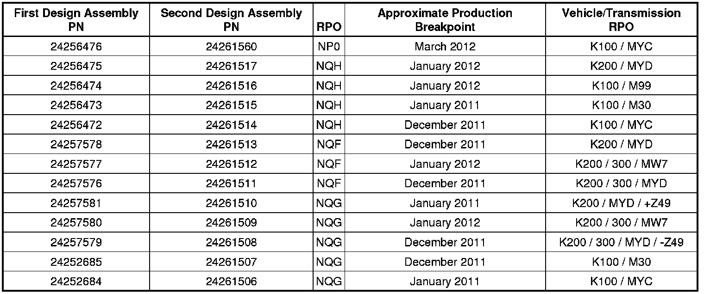
Service Parts List
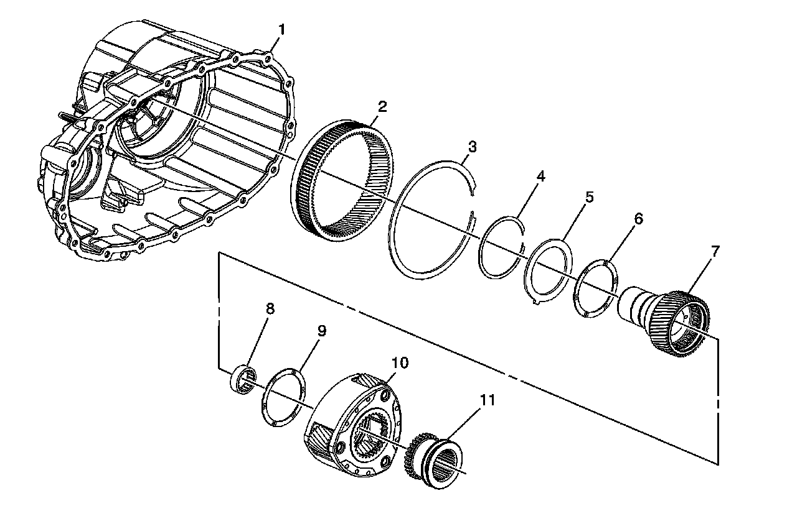
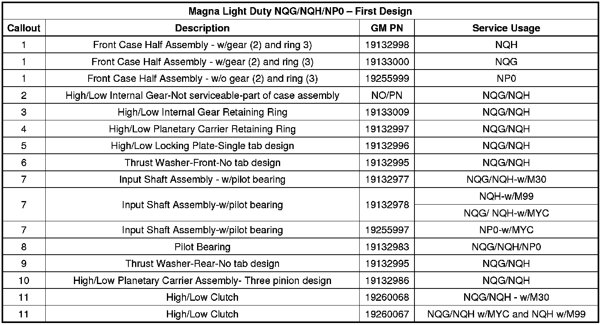
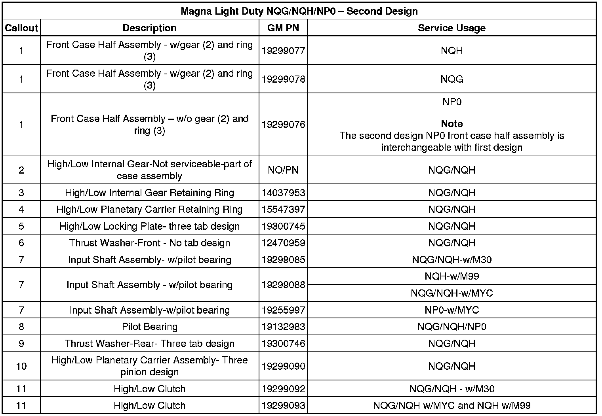
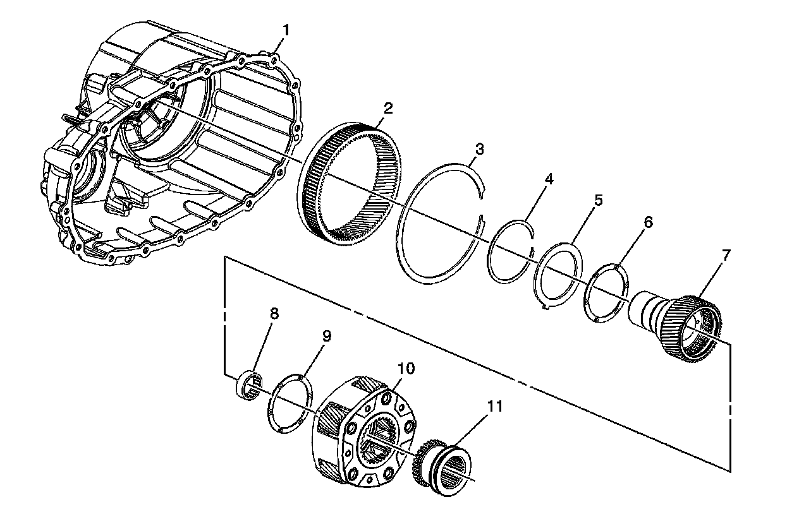
Note
2007-2010 MY Heavy Duty NQF transfer case assemblies were only produced with first-design content. Service 2007-2010 MY Heavy Duty NQG transfer case service assemblies may contain either first or second design content.
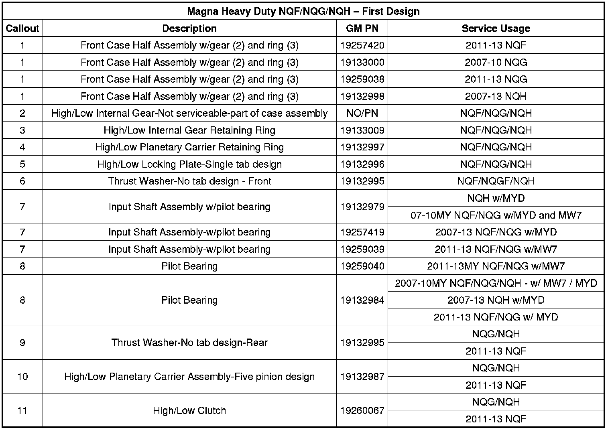
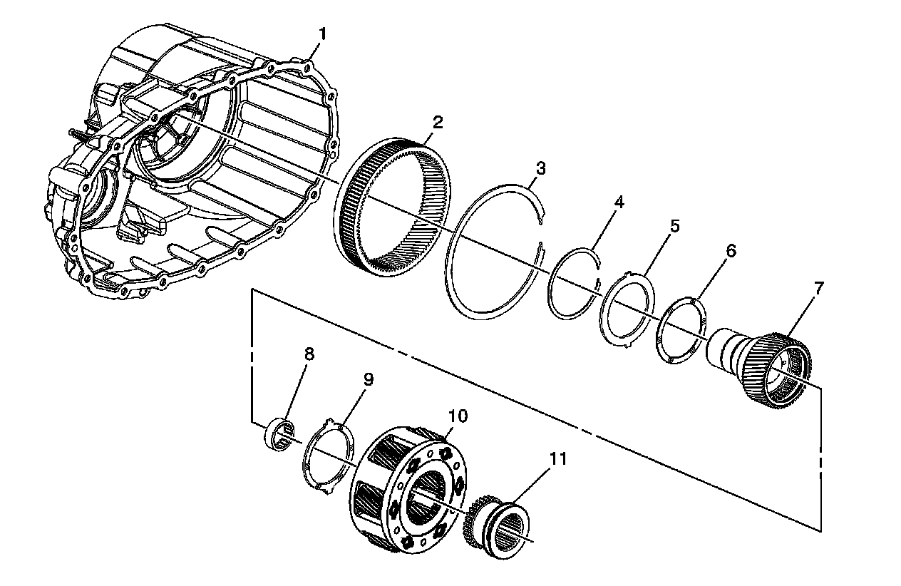
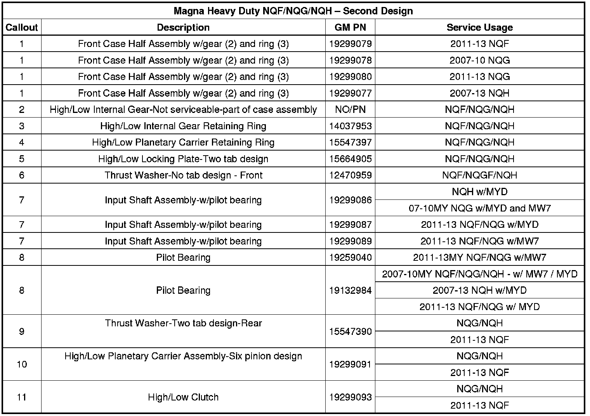
Front Case Half Identification
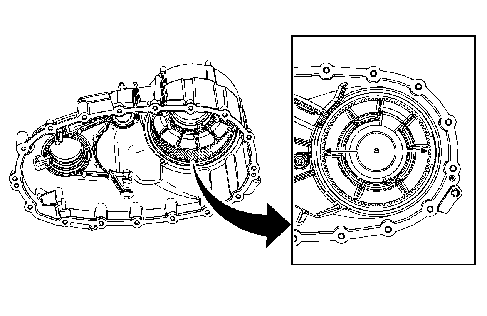
The first design front case half assembly can be identified as having an internal gear that is a 94 tooth design with an inside diameter (a) of 148.5 mm (5.85 in).
The second design front case half assembly can be identified as having an internal gear that is a 91 tooth design with an inside diameter (a) of 142 mm (5.59 in).
Input Shaft Identification
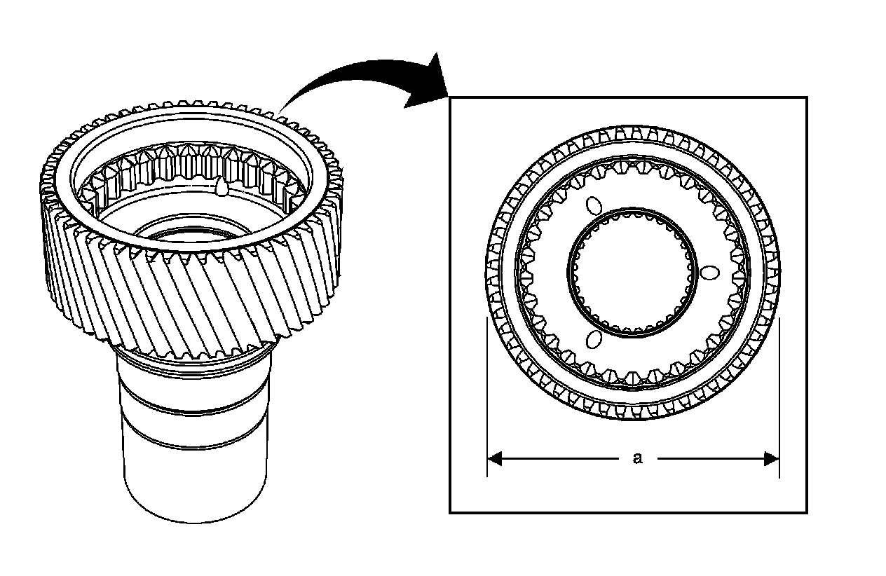
The first design input shaft can be identified as a 56 tooth design with an outside diameter (a) of 91.4 mm (3.60 in).
The second design input shaft can be identified as a 53 tooth design with an outside diameter (a) of 87.50 mm (3.44 in).
High/Low Planetary Carrier Assembly Identification
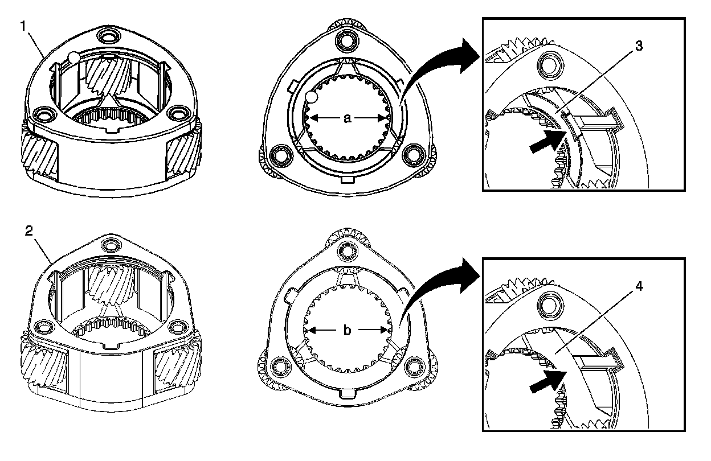
The first-design light-duty 3-pinion high/low planetary carrier (1) can be identified as having a 30 tooth design with an inside diameter (a) of 61.3 mm (2.41 in). In addition, the first-design carrier can also be identified by the presence of a recessed washer pocket (3) at the rear thrust washer location.
The second-design light-duty 3-pinion high/low planetary carrier (2) can be identified as having a 29 tooth design with an inside diameter (b) of 60.2 mm (2.37 in). In addition, the second-design carrier can also be identified by the lack of a recessed washer pocket (4) at the rear thrust washer location.
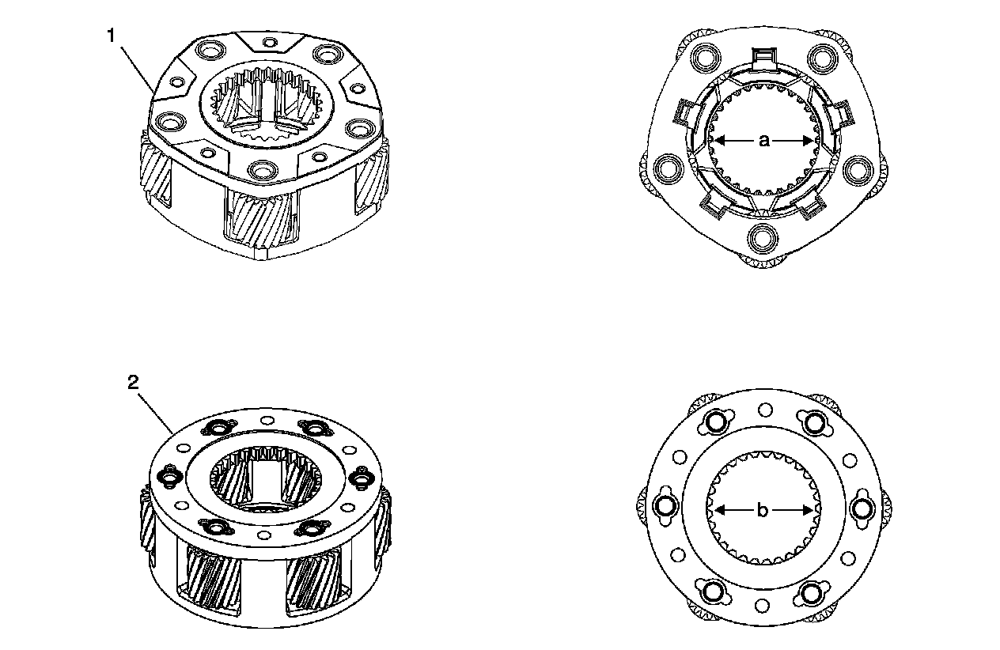
The first-design heavy-duty 5-pinion high/low planetary carrier (1) can be identified as having 5 pinions and a 30 tooth design with an inside diameter (a) of 61.3 mm (2.41 in).
The second-design heavy-duty 6-pinion high/low planetary carrier (2) can be identified as having 6 pinions and a 29 tooth design with an inside diameter (b) of 60.2 mm (2.37 in).
High/Low Clutch
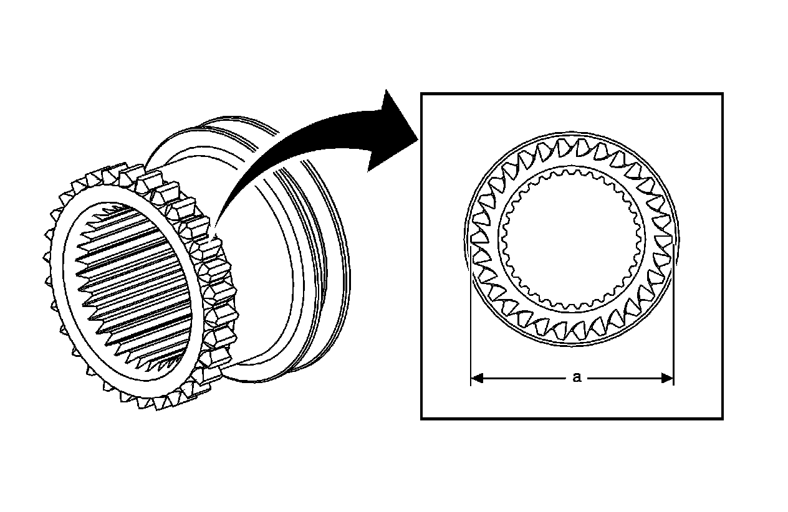
The first design high/low clutch can be identified as having a 30 tooth design with a gear tooth outside diameter (a) of 65.50 mm (2.58 in).
The second design high/low clutch can be identified as having a 29 tooth design with a gear tooth outside diameter (a) of 63.25 mm (2.49 in).
Component Replacement - Conversion from First Design to Second Design
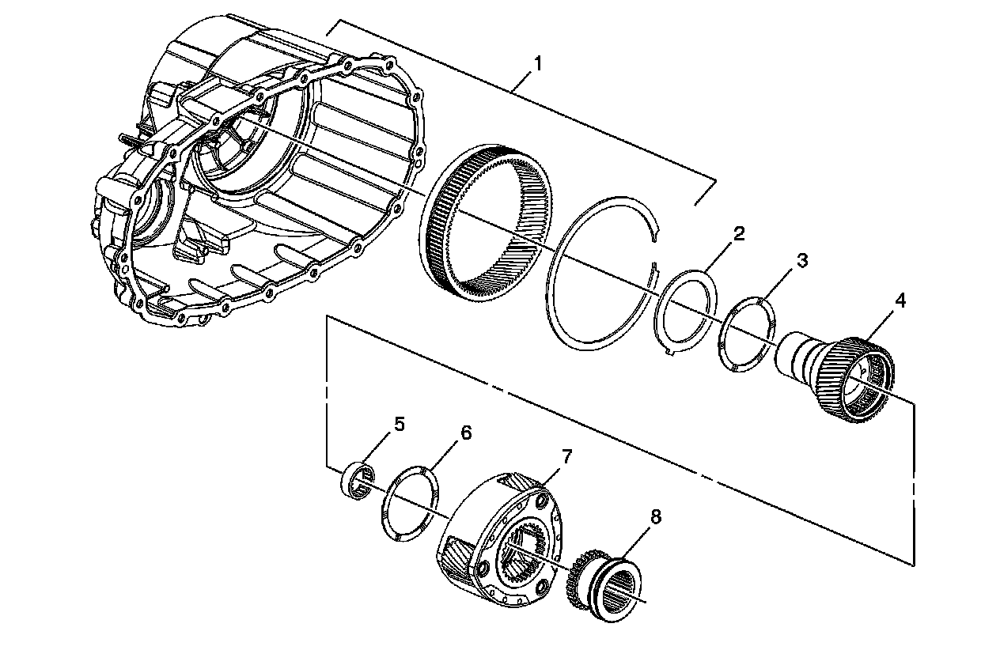
It is possible to repair a first-design assembly using second-design components. Refer to the parts catalog and the tables above for component part number clarification.
Note
First-design LD components are shown in the view above.
When servicing a first-design assembly with second-design components, the following components MUST be replaced as a group:
1. Front Case Half Assembly - with internal gear and retaining ring
2. Locking Plate
3. Thrust Washer (front)
4. Input Shaft
5. Pilot Bearing
6. Thrust Washer (rear)
7. Planetary Carrier Assembly
8. High/Low Clutch

Disclaimer